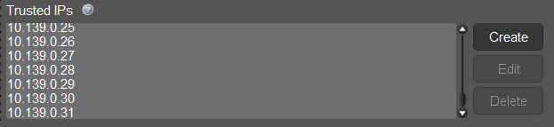
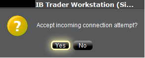
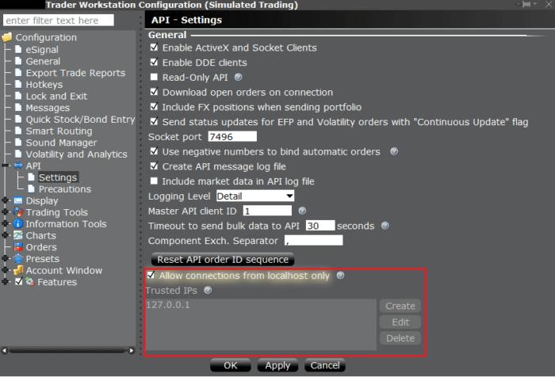

A socket connection between the API client application and TWS is established with the IBApi.EClientSocket.eConnect function. TWS acts as a server to receive requests from the API application (the client) and responds by taking appropriate actions. The first step is for the API client to initiate a connection to TWS on a socket port where TWS is already listening. It is possible to have multiple TWS instances running on the same computer if each is configured with a different API socket port number. Also, each TWS session can receive up to 32 different client applications simultaneously. The client ID field specified in the API connection is used to distinguish different API clients.
Once our two main objects have been created, EWrapper and ESocketClient, the client application can connect via the IBApi.EClientSocket object:
app.connect("127.0.0.1", args.port, clientId=0)
eConnect starts by requesting from the operating system that a TCP socket be opened to the specified IP address and socket port. If the socket cannot be opened, the operating system (not TWS) returns an error which is received by the API client as error code 502 to IBApi.EWrapper.error (Note: since this error is not generated by TWS it is not captured in TWS log files). Most commonly error 502 will indicate that TWS is not running with the API enabled, or it is listening for connections on a different socket port. If connecting across a network, the error can also occur if there is a firewall or antivirus program blocking connections, or if the router’s IP address is not listed in the “Trusted IPs” in TWS.
After the socket has been opened, there must be an initial handshake in which information is exchanged about the supported version of the TWS and API to ensure each platform can interpret received messages correctly.
After the highest version number which can be used for communication is established, TWS will return certain pieces of data that correspond specifically to the logged-in TWS user’s session. This includes (1) the account number(s) accessible in this TWS session, (2) the next valid order identifier (ID), and (3) the time of connection. In the most common mode of operation the EClient.AsyncEConnect field is set to false and the initial handshake is taken to completion immediately after the socket connection is established. TWS will then immediately provides the API client with this information.
There is an alternative, deprecated mode of connection used in special cases in which the variable AsyncEconnect is set to true, and the call to startAPI is only called from the connectAck() function. All IB samples use the mode AsyncEconnect = False.
The ConnectAck function is called automatically once a connection has been established with the Trader Workstation or IB Gateway.
def connectAck(self):
print("API Connection Established.")
A user can verify whether their API session is connected at any point with the EClient.isConnected() function.
print(app.isConnected())
eConnect starts by requesting from the operating system that a TCP socket be opened to the specified IP address and socket port. If the socket cannot be opened, the operating system (not TWS) returns an error which is received by the API client as error code 502 to IBApi.EWrapper.error (Note: since this error is not generated by TWS it is not captured in TWS log files). Most commonly error 502 will indicate that TWS is not running with the API enabled, or it is listening for connections on a different socket port. If connecting across a network, the error can also occur if there is a firewall or antivirus program blocking connections, or if the router’s IP address is not listed in the “Trusted IPs” in TWS.
After the socket has been opened, there must be an initial handshake in which information is exchanged about the supported version of the TWS and API to ensure each platform can interpret received messages correctly.
After the highest version number which can be used for communication is established, TWS will return certain pieces of data that correspond specifically to the logged-in TWS user’s session. This includes (1) the account number(s) accessible in this TWS session, (2) the next valid order identifier (ID), and (3) the time of connection. In the most common mode of operation the EClient.AsyncEConnect field is set to false and the initial handshake is taken to completion immediately after the socket connection is established. TWS will then immediately provides the API client with this information.
There is an alternative, deprecated mode of connection used in special cases in which the variable AsyncEconnect is set to true, and the call to startAPI is only called from the connectAck() function. All IB samples use the mode AsyncEconnect = False.
API programs always have at least two threads of execution. One thread is used for sending messages to TWS, and another thread is used for reading returned messages. The second thread uses the API EReader class to read from the socket and add messages to a queue. Everytime a new message is added to the message queue, a notification flag is triggered to let other threads know that there is a message waiting to be processed. In the two-thread design of an API program, the message queue is also processed by the first thread. In a three-thread design, an additional thread is created to perform this task. The thread responsible for the message queue will decode messages and invoke the appropriate functions in EWrapper. The two-threaded design is used in the IB Python sample Program.py and the C++ sample TestCppClient, while the ‘Testbed’ samples in the other languages use a three-threaded design. Commonly in a Python asynchronous network application, the asyncio module will be used to create a more sequential looking code design.
The class which has functionality for reading and parsing raw messages from TWS is the IBApi.EReader class.
For C#, Java, C++, and Visual Basic, we instead maintain a triple thread structure which requires the creation of a reader thread, a queue thread, and then a wrapper thread. The documentation listed here further elaborates on the structure for those languages.
final EReader reader = new EReader(m_client, m_signal);
reader.start();
//An additional thread is created in this program design to empty the messaging queue
new Thread(() -> {
while (m_client.isConnected()) {
m_signal.waitForSignal();
try {
reader.processMsgs();
} catch (Exception e) {
System.out.println("Exception: "+e.getMessage());
}
}
}).start();
m_pReader = std::unique_ptr<EReader>( new EReader(m_pClient, &m_osSignal) ); m_pReader->start();
//Create a reader to consume messages from the TWS. The EReader will consume the incoming messages and put them in a queue
var reader = new EReader(clientSocket, readerSignal);
reader.Start();
//Once the messages are in the queue, an additional thread can be created to fetch them
new Thread(() => { while (clientSocket.IsConnected()) { readerSignal.waitForSignal(); reader.processMsgs(); } }) { IsBackground = true }.Start();'Once the messages are in the queue, an additional thread need to fetch them Dim msgThread As Thread = New Thread(AddressOf messageProcessing) msgThread.IsBackground = True If (wrapperImpl.serverVersion() > 0) Then Call msgThread.Start()
Private Sub messageProcessing()
Dim reader As EReader = New EReader(wrapperImpl.socketClient, wrapperImpl.eReaderSignal)
reader.Start()
While (wrapperImpl.socketClient.IsConnected)
wrapperImpl.eReaderSignal.waitForSignal()
reader.processMsgs()
End While
End Sub
Now it is time to revisit the role of IBApi.EReaderSignal initially introduced in The EClientSocket Class. As mentioned in the previous paragraph, after the EReader thread places a message in the queue, a notification is issued to make known that a message is ready for processing. In the (C++, C#/.NET, Java) APIs, this is done via the IBApi.EReaderSignal object we initiated within the IBApi.EWrapper’s implementer.
In Python IB API, the EReader logic is handled in the EClient.connect so the EReader thread is automatically started upon connection. There is no need for user to start the reader.
Once the client is connected, a reader thread will be automatically created to handle incoming messages and put the messages into a message queue for further process. User is required to trigger Client::run() below, where the message queue is processed in an infinite loop and the EWrapper call-back functions are automatically triggered.
Now it is time to revisit the role of IBApi.EReaderSignal initially introduced in The EClientSocket Class. As mentioned in the previous paragraph, after the EReader thread places a message in the queue, a notification is issued to make known that a message is ready for processing. In the Python API, this is handled automatically by the Queue class.
If you want to connect TWS/ IB Gateway from a remote server, uncheck the “Allow connection from localhost only” setting. Under the “Trusted IPs” section, click “Create” and enter the IP Address detected in “Accept incoming connection attempt from <IP Address>” into “Trusted IPs”.
“Trusted IPs” does not accept subnet (e.g. /27, /28). It only accepts single IP Addresses. In the following example, there is a remote computing cluster /27 which has 32 IP Addresses and the remote computing cluster will randomly assign one of the computing nodes to connect to TWS in every connection. To make this happen, every Private IPv4 Address of the subnet are put into the “Trusted IPs” (You can also exclude the first IP Network Address and the last IP Broadcast Address of the subnet).

For security reasons, by default the API is not configured to automatically accept connection requests from API applications. After a connection attempt, a dialogue will appear in TWS asking the user to manually confirm that a connection can be made:
Untrusted IPs attempting to make a connection will be denied without prompting.

To prevent the TWS from asking the end user to accept the connection, it is possible to configure it to automatically accept the connection from a trusted IP address and/or the local machine. This can easily be done via the TWS API settings:

It is not possible to login to multiple trading applications simultaneously with the same username. However, it is possible to create additional usernames for an account that can be used in different trading applications simultaneously, as long as there is not more than a single trading application logged in with a given username at a time. There are some additional cases in which it is also useful to create additional usernames:
If a different username is utilized to login to Client Portal in either of these cases, then it will not affect the TWS/IBGW session.
How to add additional usernames in Account Management
If there is a problem with the socket connection between TWS and the API client, for instance if TWS suddenly closes, this will trigger an exception in the EReader thread which is reading from the socket. This exception will also occur if an API client attempts to connect with a client ID that is already in use.
The socket EOF is handled slightly differently in different API languages. For instance in Java, it is caught and sent to the client application to IBApi::EWrapper::error with errorCode 507: “Bad Message”. In C# it is caught and sent to IBApi::EWrapper::error with errorCode -1. The client application needs to handle this error message and use it to indicate that an exception has been thrown in the socket connection.
Clients can validate a broken connection with the EWrapper.connectionClosed and EClient.isConnected functions.
Once a connection fails for any reason, the EWrapper.connectionClosed function will be called. This function can be used to build reconnection logic or affirm a system disconnect.
def connectClosed(self):
print("API Connection Lost.")